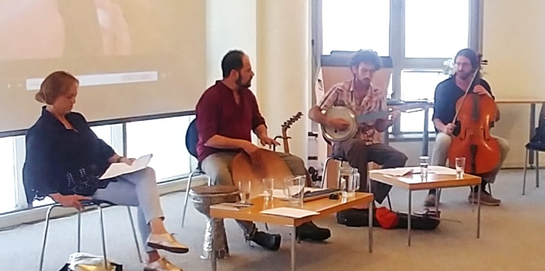

On June 21, 2019, the Mandel Center for Leadership in the Negev hosted Yair Harel and the Tafilalt Ensemble as part of the final event of its 2019 Negev Lab series, which serves as a forum for shared learning and thinking about culture, creativity, and identity in the Negev.
The event opened with small discussion groups in which the participants explored the role of “shadow” in cultural activity in the Negev. This was followed by a combined performance-conversation-workshop entitled “Many Voices in the Shadow of One.” The musical session was conducted by musician Yair Harel, a percussionist who specializes in traditional Jewish music, classical Mizrahi music, and contemporary music, and the members of the Tafilalt Ensemble, which combines Mizrahi Jewish poetry and piyyut (liturgical poems set to music) with modern Israeli music using musical instruments from various cultures around the world. The session explored the sources of piyyut and its role as a means by which individuals and communities can create shared cultural memory and discourse, and build togetherness in the present day.
The ensemble played and sang well-known traditional Jewish texts, including “Yachid Ram Beshalom” by Rabbi Yisrael Najara and “Yedid Nefesh” by Rabbi Elazar Azikri. These pieces provided an opportunity to discuss the influence of surrounding local cultures on the cultural works of Jewish communities in foreign lands. An example of this can be seen in the influence of Maghreb society on the Jewish community of Morocco, as reflected in the verse “May the peoples praise you, O Lord, may all the peoples praise you,” in Psalms 67. The session also examined the role of music as a bridge between cultures.
Led by visiting faculty member
Dr. Ruth Calderon and
Dr. Adi Nir Sagi, director of the Mandel Center for Leadership in the Negev, the Negev Lab series is a forum for leaders from throughout the Negev, who come together to learn and gain inspiration on issues relating to local arts and culture. The lively debate at the forum provides an important and powerful form of engagement for developing cultural leadership in the Negev. Events are attended by leading figures from the Negev who are active in the fields of local government, academia, public institutions, as well as leaders of cultural organizations active in local arts.

{kind=link}